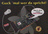
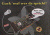
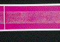
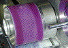

STRICHAUFBAUEN (STRICHABLAGERUNGEN AUF DEM
DRUCKTUCH)
|
Bei einer auftretenden Wechselwirkung zwischen der
gestrichenen Papieroberfläche und dem
Feuchtmittel kann der Papierstrich beim
Mehrfarben-Nass-in-Nass-Offsetdruck (Bogenoffset
und Rollenoffset) im ersten Druckwerk angelöst
werden. In den Folgedruckwerken kommt es dann im
Druckspalt durch die Zügigkeit der Druckfarbe
oder durch die Klebrigkeit des Drucktuchs zum
Ablösen des Strichs. Die Strichbestandteile
lagern sich dadurch auf dem Drucktuch ab; ein
einwandfreier Ausdruck ist in der Folge dann nicht
mehr möglich. Das Druckmotiv wird zunehmend
unruhiger und ungleichmäßiger (wolkiger
Ausdruck). Die Produktion muss in kurzen
Zeitabständen unterbrochen werden, um die
Drucktücher zu reinigen. Es entstehen
Produktionszeitverlängerungen und somit
erhebliche Mehrkosten.
|
|
Abb. 1: Wolkiger Ausdruck aufgrund von
Strichablagerungen auf dem Drucktuch.
|
|
|
|
Mögliche Ursachen:
|
|

|
|
Abb. 2: Druckergebnis ohne Beanstandung.
|
|
|
|

|
|
Abb. 3: Beanstandeter Auflagendruck.
|
|
|
|

|
|
Abb. 4: Probedruck mit Vorfeuchtung -
beanstandetes Muster.
|
|
|
|

|
|
Abb. 5: Aufnahme der Probedruckform mit
Strichablagerungen.
|
|
|
|
|
|
Abb. 6: Probedruck mit Vorfeuchtung -
unbeanstandetes Muster.
|
|
|
|

|
|
|
|
|
|

|
|
|
|
|
|

|
|
|
|
|
|
|
Bei gestrichenen Papieren, die für den
Mehrfarben-Nass-in-Nass-Offsetdruck geeignet sind, wird eine
ausreichende Wasserfestigkeit des Strichs vorausgesetzt. Ist
die ausreichende Wasserfestigkeit nicht gegeben, neigen
derartige Papiere zum Strichaufbauen; es liegt also in
diesen Fällen eine papierbedingte Ursache vor.
Zu hoher Alkoholgehalt im Feuchtmittel kann den Papierstrich
zusätzlich schwächen und die Tendenz zum
Strichaufbauen verstärken.
Eine zu hohe Druckbeistellung kann negativ auf das
Strichaufbauen wirken, weil dadurch die Belastung im
Druckspalt unnötig erhöht wird und daher auch eine
verstärkte Beanspruchung auf die Papieroberfläche
ausgeübt wird.
Sind die Ursachen des wolkigen Ausdrucks nicht auf
Strichaufbauen zurückzuführen, können die in
den Kapiteln „Wolkigkeit“, „mottling“
oder „Abstoßen der Druckfarbe“ genannten
papierbedingten Erscheinungen als Ursache infrage kommen. Es
gelten dann auch die entsprechenden
Abhilfemaßnahmen.
Weiterhin können im nicht-papierbedingten Fall die
gleichen drucktechnischen Ursachen wie beim Kapitel
„Wolkigkeit“ genannt werden. Diese sind:
- Fehlerhafte Zurichtung oder Spannung des Drucktuches
- Benetzungsstörungen des Drucktuches
- Zu geringe Druckbeistellung
- Schlieren im Filmkleber bei konventioneller
Bogenmontage
- Fehler bei der konventionellen Druckplattenbelichtung
- Falsche Rasterwinkelung der Reprofilme und daraus
resultierende Moirébildung
|
Mögliche Abhilfen:
|
|
Ist das Strichaufbauen auf eine Wasserempfindlichkeit des
Strichs zurückzuführen, bleibt nur der Wechsel auf
eine andere Papiersorte. Gegebenenfalls kann die
Feuchtmittelmenge oder der Alkoholgehalt reduziert werden,
wenn diese Maßnahmen drucktechnisch vertretbar
sind.
Bei drucktechnischen Ursachen für den
ungleichmäßigen Ausdruck gelten die gleichen
Abhilfemaßnahmen wie unter dem Kapitel
„Wolkigkeit“ aufgelistet.
Diese sind die Kontrolle der :
- Aufzugsstärke des Drucktuchs
- Zurichtung des Drucktuchs
- Gleichmäßigkeit der Benetzung des
Drucktuchs
- Druckplatten bzw. Filme bezüglich
Schlierenbildung
- Rasterwinkelung der Reprofilme
|
Beispiel(e):
|
|
Ungleichmäßiger Ausdruck wegen
Strichablagerungen nach dem Rollenwechsel:
Eine Computerzeitschrift wurde 4/4-farbig im Rollenoffset
produziert. Größtenteils konnte die Auflage ohne
Probleme gefertigt werden (Abb. 2). Nach einem Rollenwechsel
(gleiche Papiersorte innerhalb des Lieferpostens) trat
jedoch verstärkt wolkiger Ausdruck von
Rasterflächen auf (Abb. 3). Schließlich musste
die Produktion gestoppt werden, um die Drucktücher zu
reinigen. Auf den Drucktüchern war ein flächiger
Belag in den druckenden Partien zu erkennen, der den
Ausdruck beeinträchtigte.
Um die Ursache des wolkigen Ausdrucks herauszufinden, wurden
der FOGRA unbedruckte Papiermuster der beanstandeten Rolle
und der nicht beanstandeten Rolle übersandt. Durch
einen Probedruck mit Vorfeuchtung im
Mehrzweckprobedruckgerät konnte festgestellt werden,
dass das beanstandete Papier eine
Feuchtmittelempfindlichkeit des Strichs aufwies. In der
vorgefeuchteten Zone des Probedruckstreifens wurde der
Strich angelöst, was beim anschließenden
Druckvorgang zum Strichablösen und zu
Strichablagerungen auf der Druckform führte (Abb. 4 und
5). Das nicht beanstandete Papiermuster zeigte dagegen eine
gute Farbannahme im vorgefeuchteten Bereich, also kein
Strichanlösen (Abb. 6). Durch die Versuche konnte
demnach nachgewiesen werden, dass es sich bei dem wolkigen
Ausdruck um eine papierbedingte Ursache - also um eine
Feuchtmittelempfindlichkeit des Strichs - handelte.
Offensichtlich bestand der Lieferposten des Auflagenpapiers
aus Rollen von unterschiedlicher Qualität bzw.
unterschiedlichen Fertigungszeiträumen.
|
Allgemeine Hinweise:
|
|
Für den Reklamationsfall:
20 Blatt des unbedruckten Auflagenpapiers (DIN A4) und evtl.
des Vergleichspapiers sicherstellen.
Drucktechnische Angaben ermitteln (Farbreihenfolge,
Druckfarben, Feuchtmittel...).
Reklamierte Muster sicherstellen.
Feuchtmittel sicherstellen.
Ergänzende Literatur:
FALTER, K.-A.; SCHMITT, U.:
Ermittlung des wolkigen Ausdrucks von Vollton- und
Rasterflächen im Offsetdruck.
München: FOGRA, 1986 (3.244). - Forschungsbericht
|
|
|
|
|
|
|
Kontakt:
pantel@fogra.org
|
Str-pan-200111
|